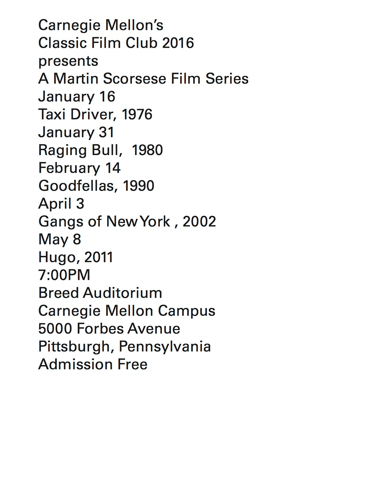
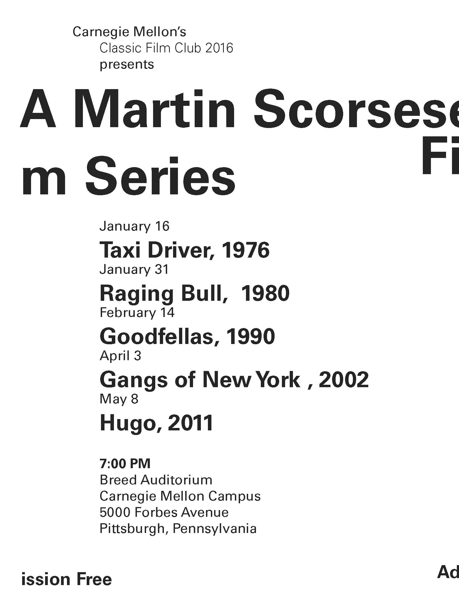
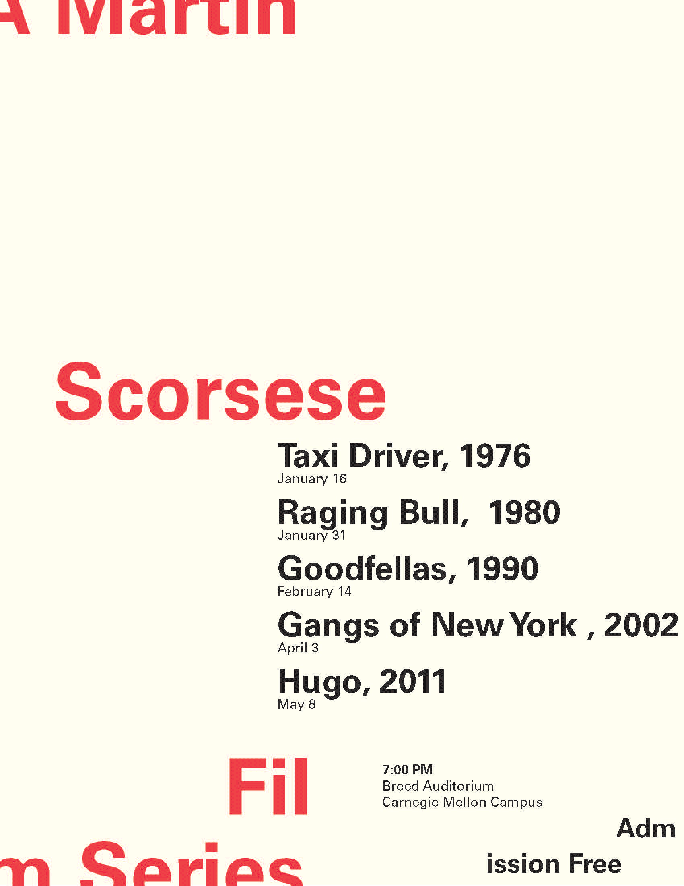

This project was an exploration on hierarchy - the importance of different weights, sizing and color.

For this project we were tasked with creating a poster for a specific event - in my case, a film series. We were each given a sheet of paper with unformatted text on it; our job was to begin to arrange the information by importance with the utilization of hierarchy and scale. We began by experimenting with different weights and sized and then moved into color, arrangement and the addition of photographs.
This is where I began exploring the different indentations, weights and spacing that I could apply to the set of text.

I was inspired by the “glitch” that occurs when watching old film, which is what inspired me to treat the body text in this way. I also wanted to remove any information I did not think was vital to express the purpose of the poster.

I looked to old school music posters for inspiration, which helped me pick my color palette.